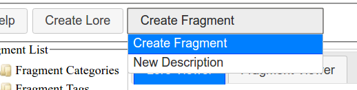
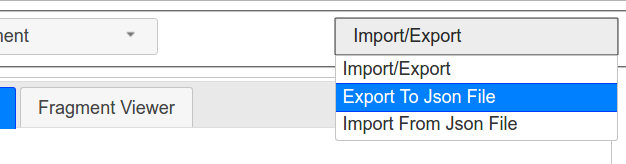

Welcome and thank you for using Lore of Legends. This web based tool is intended to help world-builders create, organize, and visualize their settings. We do this by providing editors that are good at designing specific aspects of a setting, different renderers that best depict your information, and organizational utilities that let you sort and search your content. We then structure your information in a way that makes it reusable and interconnected. Read on to see how.
If you have any feedback or something is not clear feel free to email me at domtron.vox at gmail and I'll try to help out.
I first need to introduce the core ideas that this tool is built around. This will let you better understand when I explain how to do everything. The two basic terms are Fragments and Lore. Lore is essentially a container that lets you organize several fragments together to form a piece of information about your setting. Fragments are a bit more complicated. Fragments need to contain lots of different types of data like text, interactive maps, graphs, and the like. Each fragment can hold one type of data, for example a chronological date. Through this you can build a setting incrementally creating fragments to describe each detail of your world before tying them together by placing them in each piece of Lore.
Here is a list of the currently supported fragment types.
Above is a image of the main interface. I will introduce what each part is for below.
The main tool bar lies at the top of the window. It contains the buttons needed to create Lore and Fragments, save and load data from files, and displays some status information about the tools current state.
The above image shows the two content creation buttons. "Create Lore" is simple enough. When you click it the lore editor will open in the Tabbed area below with a new Lore entry ready to fill out. There will be more information on the lore editor in a later section. The Create Fragment button will show a drop down menu listing all the possible fragment types. Clicking on the Fragment type you want to create will open the fragment editor ready to edit a fragment of the right type.
The Import/Export button allows you to save all your data to a local file and load settings data from local files. Clicking the "Export To Json File" will start a download. Rename the file and move it from your downloads folder to a safe place. Clicking the "Import From Json File" opens a file browser that lets you navigate to and open the save file. After clicking open the data will be loaded.
The image to the left shows the Fragment and Lore browsers. The Fragment list organizes fragments first by what type they are then by the tags attached to them. Clicking on any of the fragments will open them in the Fragment viewer tab to the browsers right. In addition When editing a Lore you can drag and drop fragments into the indicated locations on the lore editor. More details on that in the lore editor section.
The Lore browser works more or less the same way. Lore is only sorted by the tags attached to them, but clicking on a lore will open it in the Lore viewer.
The main thing you need to